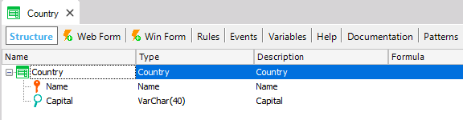
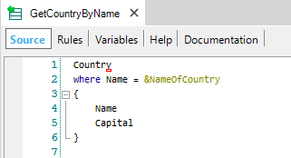
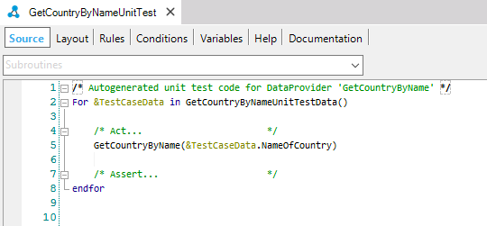
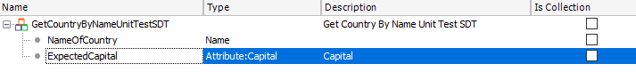
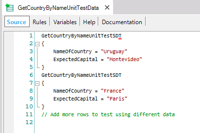
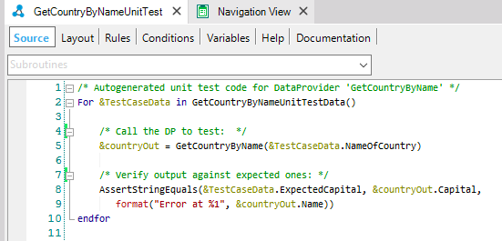

“Data Providers provide data collection or data structure in an easy, and high-level declarative way” Their output can be a Structured Data Type or a Business Component. You may want to test if your data provider is working properly. Let’s explain it with a very basic example… We have a transaction called “Country” (which has the Business Component property set as true) with the following structure:
 We also have a data provider which given the name of a country, returns Business Component (Transaction) with the name and the capital of it. Our unit test will verify that the data provider is returning the information correctly. In order to do that, we have to right-click on the data provider and click on the last option “Create Unit Test”.  Then, an auto-generated skeleton of our unit test is created:  We need to add to the SDT the data we want to check, in this case, we want to check the Capital of each country:  After that, just define data to test in the corresponding test's data provider:  And modify your test adding an assertion between the result of the call (GetCountryByName) against test data expected (&TestCaseData):  |
| Backlinks |
| Creating Unit Tests |